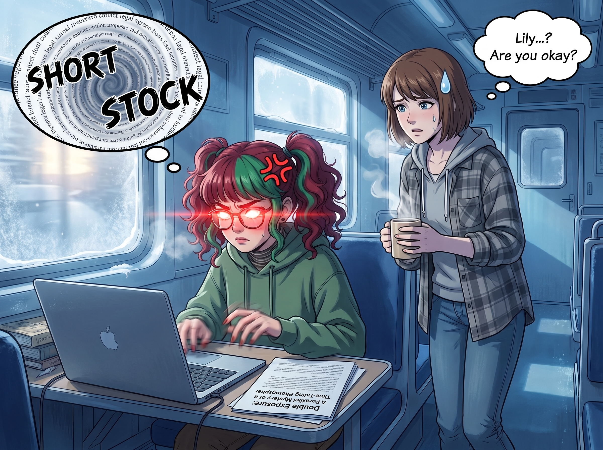

雙重曝光

這天下午，二號車廂的空氣降到了冰點。
實習生 Lily 坐在工作台前，面前放著一份來自某家娛樂公司寄來的影視改編授權提案，標題赫然寫著：《雙重曝光：時空攝影師的平行懸疑》。
Lily 平時那種溫柔微笑徹底消失了。她那雙藏在圓框眼鏡後的大眼睛裡，正瘋狂閃爍著想要毀滅世界的紅光。她的手指在鍵盤上敲擊出殘影，螢幕上密密麻麻地寫滿了法律條文和做空該公司股票的金融代碼。
「Lily？妳的鍵盤快要被妳敲碎了，它犯了什麼罪嗎？」Max 端著一杯熱茶，披著寬鬆的法蘭絨襯衫，像個退休老頭一樣慢吞吞地晃過來。
Lily 猛地抬起頭，眼眶通紅：「Max 學姐！這群資本家簡直是喪心病狂！他們居然寄來了這種東西，想買您的版權！您知道他們在劇本裡是怎麼編排您和 Price 學姐的嗎？！」
正在修車的 Chloe 聽到自己的名字，隨手拿毛巾擦了擦手，也湊了過來：「哦？好萊塢想拍我們？」
一、實習生的核爆級憤怒
「第一，」Lily 豎起一根手指，語氣冰冷，「他們為了製造廉價的懸疑感，居然設定您和 Price 學姐在經歷了小鎮毀滅那麼大的創傷後，分手了！或者漸行漸遠了！您被發配到一個不知名的大學當駐校藝術家，而 Price 學姐居然只能活在幾條敷衍的手機簡訊和舊照片裡？！」
「第二！劇本裡寫，您發誓再也不使用時間倒流，結果為了救一個剛認識沒幾天的女詩人，您不僅破戒了，還突然覺醒了什麼平行宇宙穿梭的廉價超能力？！這不符合物理學，也不符合您的社交電池容量！」
「最不可饒恕的是第三點！他們把您刻畫成一個到處翻箱倒櫃、像個笨拙偵探一樣的大學老師。沒有 Price 學姐的武力支援，沒有 Victoria 學姐的財力背書，也沒有 Kate 學姐的情緒價值。這是一個徹底將您剝削、孤立，然後丟進三流懸疑劇裡的惡毒陰謀！」
Lily 推了推眼鏡，螢幕上的做空程式已經準備就緒：「我已經查到了這家公司的稅務漏洞。我還準備了三十五封律師函，準備控告他們惡意誹謗與精神傷害。我現在就要讓他們在納斯達克退市。」
二、當事人的佛系吃瓜
面對氣到快要吐血的實習生，兩位當事人的反應卻異常平靜，甚至有點想笑。
「噗……哈哈哈哈哈！」Chloe 率先破功。她不僅沒有生氣，反而一把搶過劇本，饒有興味地翻了起來，「漸行漸遠？就因為那個什麼詩人？Maxine，妳這個渣女，妳居然背著我去別的大學泡女詩人！」
「閉嘴，Price。那只是三流編劇的意淫。」Max 嘆了口氣。她沒有像 Lily 那樣憤怒，只是覺得無比荒謬。她走到 Lily 身邊，伸手輕輕合上了實習生那台快要過熱的筆記本電腦。
「Lily，深呼吸。」Max 語氣平靜，帶著一種跨越了生死的通透，「不用為了這種工業流水線上的垃圾動氣。我的社交電池連應付樓下咖啡店的店員都不夠，妳覺得我會為了一個剛認識的人去撕裂平行宇宙嗎？光是想像一下那個工作量，我就已經想在沙發上躺三天了。」
「可是學姐！他們在褻瀆你們的羈絆！」Lily 委屈得眼淚都快掉下來了。
「得了吧，小傢伙。」Chloe 揉了揉 Lily 的腦袋，笑得沒心沒肺，「好萊塢的編劇懂個屁的羈絆？如果他們真的在劇本裡把我寫進去，這遊戲五分鐘就大結局了。因為我會直接開著皮卡撞爛那個殺人犯的車，然後把妳 Max 學姐扛回西雅圖。他們把我支開，純粹是因為他們寫不出能對付我的反派而已。」
Max 贊同地點點頭：「沒錯。沒有 Chloe 在前面擋刀，我也根本不會去查什麼兇殺案。我只會報警，然後回宿舍睡覺。這個劇本在邏輯的第一秒就已經崩壞了。」
三、名媛與天使的精準制裁
就在 Lily 被這兩個佛系當事人搞得不知所措時，Victoria 和 Kate 從外面回來了。
了解了事情的經過後，Victoria 拿過那份提案，只看了一眼，名媛的怒火瞬間點燃了。但她的著眼點完全不同。
「這群鄉巴佬是瞎了嗎？！」Victoria 指著劇本裡夾帶的概念圖，氣得渾身發抖，「他們居然讓 Caulfield 穿著那種起毛球的廉價毛衣？我花了三年時間才把她從流浪漢改造成廢土風先鋒藝術家，他們居然敢在視覺上毀了我的心血？！Lily！妳剛才說的做空計畫，算我一份！」
而 Kate 依然掛著那副聖潔的微笑。她溫柔地拍了拍 Lily 的肩膀：「Lily，生氣對肝臟不好，我們不需要動氣。我們只要把這份提案原封不動地退回去，並附上一盒我親手烤的餅乾。順便在回執裡加上一條條款：如果貴公司敢擅自使用任何影射 Max 和 Chloe 的元素，Chase 財團的法務部將會讓你們的編劇團隊，在接下來的十年裡，每天都在法庭上度過。這樣是不是很和平呢？」
「……非常和平，Kate 學姐。」Lily 吸了吸鼻子，終於露出了笑容。
四、無法被魔改的真實
當晚，Lily 將那份拒絕信發送了出去。
她端著茶杯走到起居廂，看到沙發上的場景，心中的最後一絲不忿也徹底煙消雲散了。
那兩個在劇本裡被寫成「漸行漸遠」的人，此刻正毫無形象地擠在一張單人沙發上。Chloe 橫躺著，把腿架在茶几上打著呼嚕；而那個號稱要拯救平行宇宙的時空領主 Max，則像一隻沒有骨頭的貓一樣，整個人縮在 Chloe 的懷裡，手裡拿著一本漫畫書，睡得口水都快流下來了。
沒有廉價的魔改，沒有狗血的懸疑。只有二號車廂裡，這份即使世界毀滅，也絕對無法被拆散的真實。
Lily 微微一笑，推了推圓框眼鏡，悄悄拿了一條毯子，溫柔地蓋在了她們身上。